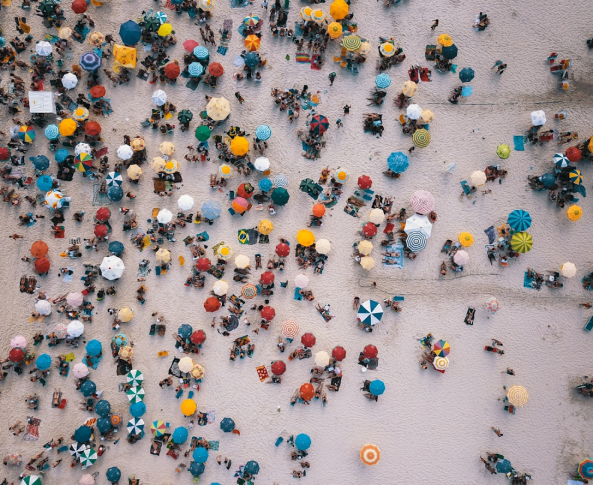

Brazil: A Tapestry of Culture and Flavor
Brazil is a country where diverse cultures blend seamlessly, creating a vibrant and dynamic atmosphere. Its music, from samba to bossa nova, pulses through city streets, while festivals like Carnival showcase the country’s joyful spirit. Brazilian cuisine is just as diverse, with dishes like feijoada and brigadeiro offering a taste of the nation’s rich culinary heritage. Whether you’re exploring the art in São Paulo, dancing in Rio de Janeiro, or enjoying regional delicacies in Bahia, Brazil’s culture and flavors are a feast for the senses